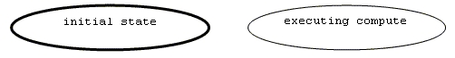
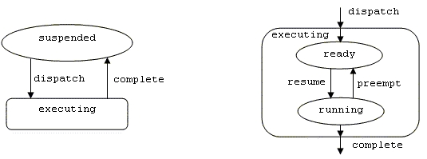
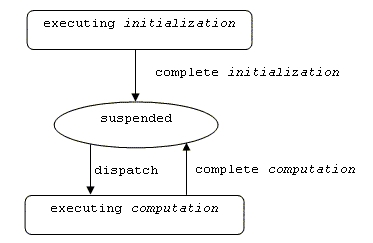
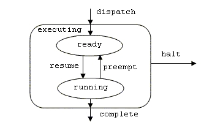
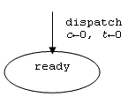
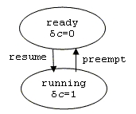
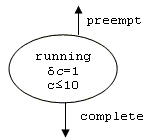
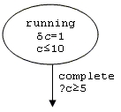
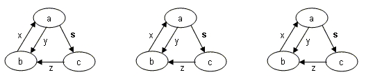

Previous
Next
Previous
Next 
| 2.3 Scope |
This standard defines a language for describing both
the software architecture and the execution
platform architectures of performance-critical, embedded, real-time systems; the language is
known as the SAE Architecture Analysis & Design Language (AADL). An architecture model
defined in AADL describes the properties and interfaces of components. Components fall into two
major categories: those that represent the execution platform and those representing the
application. The former is typified by processors, buses, and memory, the latter by application
software modules. The model describes how these components interact and are integrated to form
complete systems. It describes both functional interfaces and aspects critical for performance
of
individual components and assemblies of components. The changes to the runtime architecture
are modeled as operational modes and mode transitions.
The language is applicable to systems that are:
-
real-time,
- resource-constrained,
- safety-critical systems,
- and those that may include specialized device hardware.
This standard defines the core AADL that is designed
to be extensible. While the core language
provides a number of modeling concepts with precise semantics including the mapping to
execution platforms and the specification of execution time behavior, it is not possible to foresee
all
possible architecture analyses. Extensions to accommodate new analyses and unique hardware
attributes take the form of new properties and analysis specific notations that can be associated
with components. Users or tool vendors may define extension sets. Extension sets may be
proposed for inclusion in this standard. Such extensions will be defined as part of a new Annex
appended to the standard.
This standard does not specify how the detailed design
or implementation details of software and
hardware components are to be specified. Those details can be specified by a variety of software
programming and hardware description languages. The standard specifies relevant characteristics
of the detailed design and implementation descriptions, such as source text written in a
programming language or hardware description language, from an external (black box) perspective.
These relevant characteristics are specified as AADL component properties, and as rules of
conformance between the properties and the described components.
This standard does not prescribe any particular system
integration technologies, such as operating
system or middleware application program interfaces or bus technologies or topologies. However,
specific system architecture topologies, such as the ARINC 653 RTOS, can be modeled through
software and execution platform components. The AADL can be used to describe a variety of
hardware architectures and software infrastructures. Integration technologies can be used to
implement a specified system. The standard specifies rules of conformance between AADL
system architecture specifications and physical systems implemented from those specifications.
The standard was not designed around a particular set
of tools. It is anticipated that systems and
software tools will be provided to support the use of the AADL.
| 2.3.1 Purpose/Extent |
The purpose of the AADL is to provide a standard and
sufficiently precise (machine-processable)
way of modeling the architecture of an embedded, real-time system, such as an avionics system or
automotive control system, to permit analysis of its properties, and to support the predictable
integration of its implementation. Defining a standard way to describe system components,
interfaces, and assemblies of components facilitates the exchange of engineering data between the
multiple organizations and technical disciplines that are invariably involved in an embedded real-
time system development effort. A precise and machine-processable way to describe conceptual
and runtime architectures provides a framework for system modeling and analysis; facilitates the
automation of code generation, system build, and other development activities; and significantly
reduces design and implementation defects.
The AADL describes application software and execution
platform components of a system, and the
way in which components are assembled to form a complete system or subsystem. The language
addresses the needs of system developers in that it can describe common functional (control and
data flow) interfacing idioms as well as performance-critical aspects relating to timing, resource
allocation, fault-tolerance, safety and certification.
The AADL describes functional interfaces and non-functional
properties of application software and
execution platform components. The language is not suited for detailed design or implementation
of components. AADL may be used in conjunction with existing standard languages in these
areas. The AADL describes interfaces and properties of execution platform components including
processor, memory, communication channels, and devices interfacing with the external
environment. Detailed designs for such hardware components may be specified by associating
source text written in a hardware description language such as VHDL. The AADL can describe
interfaces and properties of application software components implemented in source text, such as
threads, processes, and runtime configurations. Detailed designs and implementations of
algorithms for such components may be specified by associating source text written in a software
programming language such as Ada 95 or C, or domain-specific modeling languages such as
MatLab®/Simulink®.
The AADL describes how components are composed together
and how they interact to form
complete system architectures. Runtime semantics of these components are specified in this
standard. Various mechanisms are available to exchange control and data between components,
including message passing, event passing, synchronized access to shared components, and
remote procedure calls. Thread scheduling protocols and timing requirements may be specified.
Dynamic reconfiguration of the runtime architecture may be specified through operational modes
and mode transitions. The language does not require the use of any specific hardware architecture
or any specific runtime software infrastructure.
Rules of conformance are specified between specifications
written in the AADL, source text and
physical components described by those specifications, and physical systems constructed from
those specifications. The AADL is not intended to describe all possible aspects of any possible
component or system; selected syntactic and semantic requirements are imposed on components
and systems. Many of the attributes of an AADL component are represented in an AADL model as
properties of that component. The conformance rules of the language include the characteristics
described by these properties as well as the syntactic and semantic requirements imposed on
components and systems. Compliance between AADL specifications and items described by
specifications is determined through analysis, e.g., by tools for source text processing and system
integration.
The AADL can be used for multiple activities in multiple
development phases, beginning with
preliminary system design. The language can be used by multiple tools to automate various levels
of modeling, analysis, implementation, integration, verification and certification.
| 2.3.2 Field of Application |
The AADL was developed to model embedded systems that
have challenging resource (size,
weight, power) constraints and strict real-time response requirements. Such systems should
tolerate faults and may utilize specialized hardware such as I/O devices. These systems are often
certified to high levels of assurance. Intended fields of application include avionics systems,
automotive systems, flight management systems, engine and power train control systems, medical
devices, industrial process control equipment, robotics, and space applications. The AADL may
be extended to support other applications as the need arises.
| 2.3.3 Structure of Document |
| A Reader’s Guide |
This standard contains a number of sections, appendices,
and annexes. The sections define the
core AADL. The appendices provide additional information, both normative and informative about the
core language. Annexes define extensions to the core AADL and provide guidelines and an
interchange format to enable the transition of AADL models to other tools. Annexes may also
provide information to clarify some of the underlying concepts incorporated into the AADL model.
AADL concepts are introduced in section 3, Architecture
Analysis & Design Language Summary.
They are defined with full syntactic and semantic descriptions as well as naming and legality rules
in succeeding sections. The vocabulary and symbols of the AADL are defined in Section 13.
Appendix C , Glossary, provides informative definitions of terms used in this document. Other
appendices include a Syntax Summary and Predeclared Property Sets. The remainder of this
section introduces notations used in this document and discusses standard conformance.
The core of the Architecture Analysis & Design Language
document consists of the following:
Section 2, References, provides normative and applicable
references as well as terms and
definitions.
Section 3, Architecture Analysis & Design Language
Summary, introduces and defines the
concepts of the language.
Section 4, Components, Packages, and Annexes, defines
the common aspects of components,
which are the design elements of the AADL. It also introduces the package, which allows
organization of the design elements in the design space. This section closes with a description
of
annex subclauses and libraries as annex-specific notational extensions to the core AADL.
The next sections introduce the language elements for
modeling application and execution platform
components in modeled systems or systems of systems.
Section 5, Software Components, defines those modeling
elements of the AADL that represent
application system software components, i.e., data, subprogram, thread, thread group, and
process.
Section 6, Execution Platform Components, defines those
modeling elements of the AADL that
model execution platform components, i.e., processor, memory, bus, and device.
Section 7, System Composition, defines system as a compositional
modeling element that
combines execution platform and application system software components.
Section 8, Features and Shared Access, defines the features
of components that are connection
points with other components, i.e., ports, subprograms, and provided and required access to
support modeling of shared access to data and buses.
Section 9, Connections and Flows, defines the constructs
to express interaction between
components in terms of connections between component features and in terms of flows through a
sequence of components.
Section 10, Properties, defines the AADL concept of properties
including property sets, property
value association, property type, and property declaration. Property associations and property
expressions are used to specify values. Property set, property type, and property name
declarations are used to extend the AADL with new properties.
Section 11, Operational Modes, defines modes and mode
transitions to support modeling of
operational modes with mode-specific system configurations and property values.
Section 12, Operational System, defines the concepts
of system instance and binding of
application software to execution platforms. This section defines the execution semantics of the
operational system including the semantics of system-wide mode switches.
Section 13, Lexical Elements, defines the basic vocabulary
of the language. As defined in this
section, identifiers in AADL are case insensitive. Identifiers differing only in the use of
corresponding upper and lower case letters are considered as the same. Similarly, reserved words
in AADL are case insensitive.
The following Appendix sections complete the definition
of the core AADL.
Appendix A , Predeclared Property Sets, contains the
standard AADL set of predeclared properties.
Appendix B , Profiles and Extensions, contains profiles
and extensions that have been approved by
the standards body.
Appendix C , Glossary, contains a glossary of terms.
Appendix D , Syntax Summary, contains a summary of the
syntax as defined in the sections of
this document.
The Annex sections introduce additions and extensions
to the core AADL. Annex F has been
included in this release of the standard. Other Annexes will be part of the next release of the
standard.
Annex A, Graphical AADL Notation, defines a graphical
representation of the AADL.
Annex B, Unified Modeling Language (UML) Profile, defines
a profile for UML that extends and
tailors UML to support modeling in terms of AADL concepts. This profile introduces another
graphical notation for AADL concepts.
Annex C, AADL Data Interchange Formats, defines an XML-based
interchange format in form of an
XMI meta model and an XML schema.
Annex D, Language Compliance and Application Program
Interface, defines language-specific rules
for source text to be compliant with an architecture specification. The initial version of this
annex
defines the language specific rules for Ada 95 and C and specifies the Ada 95 and C Application
Program Interface to runtime service calls. AADL specifications and tools that process
specifications are not required to support source text written in the Ada 95 or C language, but if
they do so then they must comply with this annex.
Annex E, Error Model, defines the component and system
compliance rules and semantics for
AADL specifications that deal with safety and security aspects of a system. AADL specifications
are not required to address these aspects of a system, but if they do then they must comply with
this annex.
Annex F, Possible Tools, contains a description of tool
support for the AADL.
The core language and the Annexes are normative,
except that the material in each of the items
listed below is informative:
Text under a NOTES or Examples heading.
Each clause or subclause whose title starts with the
word “Example'' or “Examples''.
All implementations shall conform to the core language.
In addition, an implementation may
conform separately to one or more Annexes that represent extensions to the core language.
The following appendices and annexes are informative
and do not form a part of the formal
specification of the AADL:
Appendix C , Glossary
Appendix D , Syntax Summary
Annex F, Possible Tools.
| Structure of Clauses and Subclauses |
Each section of the core standard is divided into clauses
and subclauses that have a common
structure. Each section, clause, and subclause first introduces its subject and then presents
the
remaining text in the following format. Not all headings are required in a particular clause or
subclause. Headings will be centered and formatted as shown below.
Syntax
Syntax rules, concerned with the organization of the
symbols in the AADL expressions, are given
in a variant of Backus-Naur-Form (BNF) that is described in detail in Section 1.5.
Naming Rules
Naming rules define rules for names that represent
defining identifiers and references to previously
defined identifiers.
Legality Rules
Legality rules define restrictions on AADL specifications.
Legality rules must be validated by AADL
processing tools.
Standard Properties
Standard properties define the properties that
are defined within this standard for various categories
of components. The listed properties are fully described in Appendix A .
Semantics
Semantics describes the static and dynamic meanings
of different AADL constructs with respect
to the system they model. The semantics are concerned with the effects of the execution of the
constructs, not how they would be specifically executed in a computational tool.
Processing Requirements and Permissions
AADL specifications may be processed manually or by tools
for analysis and generation. This
section documents additional requirements and permissions for determining compliance. Providers
of processing method implementations must document a list of those capabilities they support and
those they do not support.
NOTES:
Notes emphasize consequences of the rules described in
the (sub)clause or elsewhere. This
material is informative.
Examples
Examples illustrate the possible forms of the constructs
described. This material is informative.
| 2.3.4 Error, Exception, Anomaly and Compliance |
The AADL can be used to specify dependable systems.
A system can be compliant with its
specification and this standard even when that system contains failed components that no longer
satisfy their specifications. This section defines the terms fault, error, exception, anomaly
and
noncompliance [IFIP WG10.4-1992]; and defines how those terms apply to AADL specifications,
physical components (implementations), models of components, and tools that accept AADL
specifications as inputs.
A fault is defined to be an anomalous undesired
change in thread execution behavior, possibly
resulting from an anomalous undesired change in data being accessed by that thread or from
violation of a compute time or deadline constraint. A fault in a physical component is a root
cause
that may eventually lead to a component error or failure. A fault is often a specific event such
as a
transistor burning out or a programmer making a coding mistake.
An error in a physical component occurs when an
existing fault causes the internal state of the
component to deviate from its nominal or desired operation. For example, a component error may
occur when an add instruction produces an incorrect result because a transistor in the adding
circuitry is faulty.
A failure in a physical component occurs when
an error manifests itself at the component interface.
A component fails when it does not perform its nominal function for the other parts of the system
that depend on that component for their nominal operation.
A component failure may be a fault within a system that
contains that component. Thus, the
sequence of fault, error, failure may repeat itself within a hierarchically structured system. Error
propagation occurs when a failed component causes the containing system or another dependent
component to become erroneous.
A component may persist in a faulty state for some period
of time before an error occurs. This is
called fault latency. A component may persist in an erroneous state for some period of
time before
a failure occurs. This is called error latency.
An exception represents a kind of exceptional
situation; it may occur for an erroneous or failed
component when that error or failure is detected, either by the component itself or another
component with which it interfaces. For example, a fault in a software component that eventually
results in a divide-by-zero may be detected by the processor component on which it depends. An
exception is always associated with a specific component. This document defines a standard
model for exceptions for certain kinds of components (e.g. defines standard recovery sequences
and standard exception events).
An anomaly occurs when a component is in an erroneous
or failed state that does not result in a
standard exception. Undetected errors may occur in systems. A detected error may be handled
using mechanisms other than the standard exception mechanisms. For example, an error may
propagate to multiple components before it is detected and mitigated. This standard defines
nominal and exceptional behaviors for components. Anomalies are any other undefined erroneous
component behaviors, which are nevertheless considered compliant with this standard.
An AADL specification is compliant with this standard
if it satisfies all the syntactic and legality
rules defined herein.
A component or system is compliant with an AADL
specification of that component or system if
the nominal and exceptional behaviors of that component or system satisfy the applicable
semantics of the AADL specification, as defined by the semantic rules in this standard. A
component or system may be a physical implementation (e.g. a piece of hardware), or may be a
model (e.g. a simulation or analytic model). A model component or system may exhibit only
partial semantics (e.g. a schedulability model only exhibits temporal semantics). Physical
components and systems must exhibit all specified semantics, except as permitted by this
standard.
Noncompliance of a component with its specification
is a kind of design fault. This may be handled
by run-time fault-tolerance in an implemented physical system. A developer is permitted to
classify such components as anomalous rather than noncompliant.
A tool that operates on AADL specifications is compliant
with this standard if the tool checks for
compliance of input specifications with the syntactic and legality rules defined herein, except where
explicit permission is given to omit a check; and if all physical or model components or systems
generated by the tool are compliant with the specifications used to generate those components or
systems. The AADL standard allows profiles of language subsets to be defined and requires a
minimum subset of the language to be supported (see Appendix B.1). A tool must clearly specify
any portion of the language not supported and warn the user if a specification contains unsupported
language constructs, when appropriate.
Compliance of an AADL specification with the syntactic
and legality rules can be automatically
checked, with the exception of a few legality rules that are not in general tractably checkable for
all
specifications. Compliance of a component or system with its specification, and compliance of
a
tool with this standard, cannot in general be fully automatically checked. A verification process
that assures compliance to the degree required for a particular purpose must be used to perform
the latter two kinds of compliance checking.
| 2.3.5 Method of Description and Syntax Notation |
The language is described by means of a context-free
syntax together with context-dependent
requirements expressed by narrative rules. The meaning of a construct in the language is defined
by means of narrative rules.
The context-free syntax of the language is described
using the variant Backus-Naur Form (BNF)
[BNF 1960] as defined herein.
Lower case words in courier
new font, some containing embedded underlines, are used to
denote syntactic categories. A syntactic category is a nonterminal in the grammar. For example:
component_feature_list
Boldface words are used to denote reserved words, for
example:
implementation
A vertical line separates alternative items.
software_category ::= thread | process
Square brackets enclose optional items. Thus the
two following rules are equivalent.
property_association ::=
property_name => [ constant ] expression
property_association ::=
property_name => expression
| property_name => constant
expression
Curly brackets with a * symbol enclose a repeated item.
The item may appear zero or more times;
the repetitions occur from left to right as with an equivalent left-recursive rule. Thus the two
following rules are equivalent.
declaration_list ::= declaration
{ declaration }*
declaration_list ::= declaration
| declaration declaration_list
Curly brackets with a + symbol specify a repeated item
with one or more occurrences. Thus the
two following rules are equivalent.
declaration_list ::= { declaration }+
declaration_list ::= declaration { declaration }*
Parentheses (round brackets) enclose several items to
group terms. This capability reduces the
number of extra rules to be introduced. Thus, the first rule is equivalent with the latter two.
property_association ::= identifier
( => | +=> ) property_expression
property_association ::= identifier
assign property_expression
assign::= => | +=>
Square brackets, curly brackets, and parentheses may
appear as delimiters in the language as
well as meta-characters in the grammar. Square, curly, and parentheses that are delimiters in
the
language will be written in bold face in grammar rules, for example:
property_association_list
::=
{ property_association
{ ; property_association }* }
The syntax rules may preface the name of a nonterminal
with an italicized name to add semantic
information. These italicized prefaces are to be treated as comments and not a part of the
grammar definition. Thus the two following rules are equivalent.
component ::= identifier
: component_classifier ;
component ::= component_identifier
: component_classifier ;
A construct is a piece of text (explicit or implicit)
that is an instance of a syntactic category, for
example:
My_GPS: thread GPS.dualmode
;
The syntax description has been developed with an emphasis
on an abstract syntax representation
to provide clarity to the reader.
| 2.3.6 Method of Description for Discrete and Temporal Semantics |
Discrete and temporal semantics of the language are defined
in sections that define AADL
concepts using a concurrent hierarchical hybrid automata notation, together with additional
narrative rules about those diagrams. This notation consists of a hierarchical finite state machine
notation, augmented with real-valued variables to denote time and time-varying values, and with
edge guard and state invariant predicates over those variables to define temporal constraints on
when discrete state transitions may occur.
A semantic diagram defines the nominal scheduling and
reconfiguration behavior for a modeled
system as well as scheduling and reconfiguration behavior when failures are detected. A physical
realization of a specification may violate this definition, for example due to runtime errors.
A
violation of the defined semantics is called an anomalous behavior. Certain kinds of anomalous
behaviors are permitted by this standard. Legal anomalous behaviors are defined in the narrative
rules.
Semantics for individual components are defined using
a sequential hierarchical hybrid automaton.
System semantics are defined as the concurrent composition of the hybrid automata of the system
components.
Ovals labeled with lower case phrases are used to denote
discrete states. A component may
remain in one of its discrete states for an interval of time whose duration may be zero or greater.
Every semantic automaton for a component has a unique initial discrete state, indicated by a heavy
border. For example,

Directed edges labeled with one or more comma-separated,
lower case phrases are used to denote
possible transitions between the discrete states of a component. Transitions over an edge are
logically instantaneous, i.e., the time interval in which a transition from a discrete state (called
the
source discrete state) to a discrete state (called the destination discrete state) has duration 0.
During the instant of time in which a transition occurs, it is undefined whether the component is in
the source state or the destination state. For example,

Permissions that allow a runtime implementation of a
transition to occur over an interval of time are
expressed as narrative rules. However, all implemented transitions must be atomic with respect to
each other, all observable serializations must be admitted by the logical semantics, and all
temporal predicates as defined in subsequent paragraphs must be satisfied.
Oblong boxes labeled with lower case phrases denote abstract
discrete states that are defined as
sets of other discrete states and edges. Wherever such an abstract discrete state appears in a
hybrid semantics diagram, there will always be another hybrid semantics diagram showing an
identically labeled oblong box that contains discrete states and edges to define that abstract
discrete state. For example,

If there are multiple oblong boxes with the same label
in a diagram, then multiple abstract discrete
states are denoted. That is, the behavior is as if every occurrence of an abstract discrete state
were replaced by a copy of its defining set of discrete states and transitions. In this standard,
abstract states and edges that connect them will always be labeled so that the defining diagram for
an abstract state, and the association between edges in the defining diagram and edges in the
containing diagram, are unambiguous. An abstract state label or an edge label may include
italicized letters that are not a part of the formal name but are used to distinguish multiple
instances. For example, both abstract discrete states below will be defined by a single diagram
labeled executing.

If there is an external edge that enters or exits the
containing oblong box in the defining diagram for
an abstract state, and there are no edges within that definition that connect any internal discrete
state with that external edge, then there implicitly exist edges from every contained discrete state
in the defining diagram to or from that external edge. That is, a transition over that external
edge
may occur for any discrete state in the defining diagram. For example, in the following diagram
there is an implicitly defined halt edge out of both the ready and the running discrete states.

Real-valued variables whose values are time-varying may
appear in expressions that annotate
discrete states and edges of hybrid semantic diagrams. Specific forms of annotation are defined
in
subsequent paragraphs. The set of real-valued variables associated with a semantic diagram are
those that appear in any expression in that diagram, or in any of the defining diagrams for abstract
discrete states that appear in that diagram. Real-valued time-varying variables will be named
using
an italicized front. The initial values for the real-valued time-varying variables of a hybrid
semantic
diagram are undefined whenever they are not explicitly defined in narrative rules.
In addition to standard rational literals and arithmetic
operators, expressions may also contain
functions of discrete variables. The names of functions and discrete variables will begin with
upper
case letters. The semantics for function symbols and discrete variables will be defined using
narrative rules. For example, the subexpression Max(Compute_Time) may appear in a semantic
diagram, together with a narrative rule stating that the value is the maximum value of a range-valued
component property named Compute_Time.
Edges may be annotated with assignments of values to
variables associated with the semantic
diagram. When a transition occurs over an edge, the values of the variables are set to the
assigned values. For example, in the following diagram, the values of the variables c and t
are set
to 0 when the component transitions into the ready discrete state.

Discrete states may be annotated with expressions that
define the possible rates of change for real-
valued variables during the duration of time a component is in that discrete state. The
rate of a
variable is denoted using the symbol δ, for example δx=[0,1] (the rate of the variable x may be any
real value in the range of 0 to 1). If, rates of change are not explicitly shown within a discrete
state
for a time-varying variable, then the rate of change of that variable in that state is defined to be
1.
For example, in the following diagram the rate of change for the variable c is 1 while the component
is in the discrete state running,
but its value remains fixed while the component is in the ready
state, equal to the value that existed when the component transitioned into the ready state.

A discrete state may be annotated with Boolean-valued
expressions called invariants of that
discrete state. In this standard, all semantic diagrams are defined so that the values of the
variables will always satisfy the invariants of a discrete state for every possible transition into
that
discrete state. A transition must occur out of a discrete state before the values of any time-varying
variables cause any invariant of that discrete state to become false. Invariants are used to define
bounds on the duration of time that a component can remain in a discrete state. For example, in
the following diagram the component must transition out of the running state before the value of
the variable c exceeds 10.

An edge may be annotated with Boolean-valued expressions
called guards of that edge. A
transition may occur from a source discrete state to a destination discrete state only when the
values of the variables satisfy all guards for an edge between those discrete states. A guard on an
edge is evaluated before any assignments on that edge are performed. For example, in the
following diagram the component may only complete when the value of the variable c is 5 or
greater (but must complete
before c exceeds 10 because of the invariant).

A sequential semantic automaton defines semantics for
a single component. A system may
contain multiple components. The semantics of a system are defined to be the concurrent
composition of the sequential semantic automata for each component. Except as described
below, every component is represented by a copy of its defined semantic automaton. All discrete
states and labels, all edges and labels, and all variables, are local to a component. The set of
discrete states of the system is the cross-product of the sets of discrete states for each of its
cross product components. The set of transitions that may occur for a system at any point in time
is the union of the transitions that may occur at that instant for any of its components.
If an edge label appears in boldface, then a transition
may occur over that edge only when a
transition occurs over all edges having that same boldface label within the synchronization scope
for that label. The synchronization scope for a boldface label is indicated in parentheses. For
example, if a transition occurs over an edge having a boldface label with a synchronization scope of
process, then every thread contained in that process in which that boldface label appears anywhere
in its hybrid semantic diagram must transition over some edge having that label. That is, transitions
over edges with boldface labels occur synchronously with all similarly labeled edge transitions in all
components associated with the component with the specified synchronization scope as described
in the narrative. Furthermore, every component in that synchronization scope that might participate
in such a transition in any of its discrete states must be in one of those discrete states and
participate in that transition. For example, when the synchronization scope for the edge label s
is
the same for all three of the following concurrent semantic automata, a transition over the edge
labeled s may only occur when all three components are in their discrete states labeled a, and all
three components simultaneously transition to their discrete states labeled c.

If a variable appears in boldface, then there is a single
instance of that variable that is shared by all
components in the synchronization scope of the variable. The synchronization scope for a boldface
variable will be defined in narrative rules.